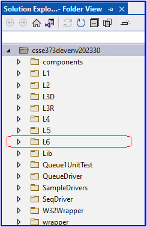
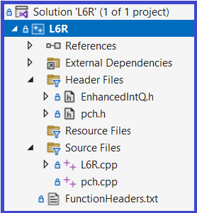

1.1 Get the L6RStarter Download
- Download L6RStarter.zip to your machine - to be used in subsequent steps
1.2 Copy AppendCapabilitiy1.hpp from the L6RStarter.zip
- Inside L6RStarter.zip is a file named AppendCapabilitiy1.hpp
- Copy this file into your: csse373devenv202x30-yourID\components\include\Queue
- AppendCapabilitiy1.hpp contains a fully functional Queue append operation and uses C++ template syntax that allows layering of this operation onto the Queue component
1.3 Copy the L6R Folder from the L6RStarter.zip
- Inside L6RStarter.zip is a folder named L6R
- Copy the L6R folder to your csse373devenv202x30-yourID folder as shown in the screen shot to the right
- Once you have copied this folder you can use VS2022 to open the L6R project by double clicking on L6R.sln
1.4 About Project L6R
- It contains a Visual Studio 2022 unit test project
- It can be opened with VS2022 by double clicking on the file L6R.sln
- It will build correctly if you have followed the instructions in 1.1 - 1.3 (above)
- After building, use Test Explorer to run the unit tests found in L6R.cpp
- L6R contains unit tests for Queue's AppendCapability, InjectCapability, FindLocOfXCapability, and EqualCapability
- The files you will be working in are:
- EnhancedIntQ.h - Contains "To do" instructions and typedefs for template instance creation
- L6R.cpp - Contains 4 basic unit tests
- FunctionHeaders.txt - Contains the function headers and external contracts for two of the new capabilities you will be creating
|

 |